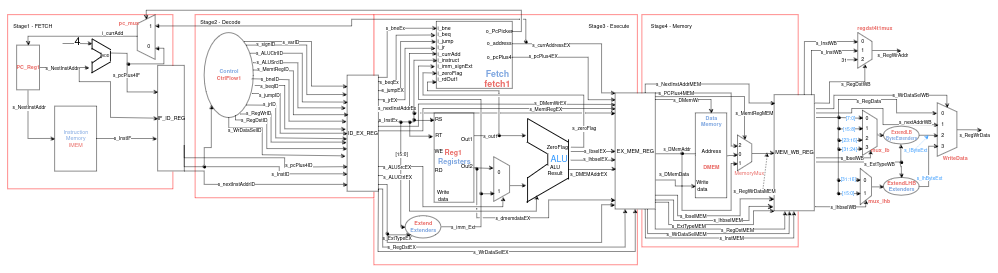

CPRE 3810 Final Project: MIPS Processor
May 2025

In CPRE 3810, our team designed, built, and analyzed three MIPS processor architectures: Single Cycle, Software-Scheduled Pipeline, and Hardware-Scheduled Pipeline. This project gave me hands-on experience with VHDL design, pipeline optimization, and performance benchmarking.
My Role
Collaborated with Claire Lewis to design, implement, and test all three processor architectures. Focused on pipeline stages, hazard detection, and performance optimization.
Skills / Knowledge Gained
- VHDL design and debugging
- MIPS architecture and instruction flow
- Single-cycle and pipelined processor implementation
- Pipeline hazard detection and forwarding logic
- Benchmarking and performance analysis using MARS and ModelSim
- Collaboration and merge conflict resolution in Git
Resources Used
- VHDL and ModelSim for simulation
- MARS MIPS simulator for instruction counting
- Git for version control
- Course lab documents and prior processor designs
Lab Report